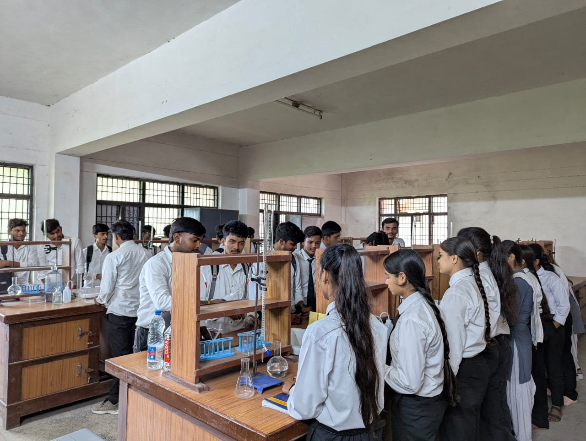
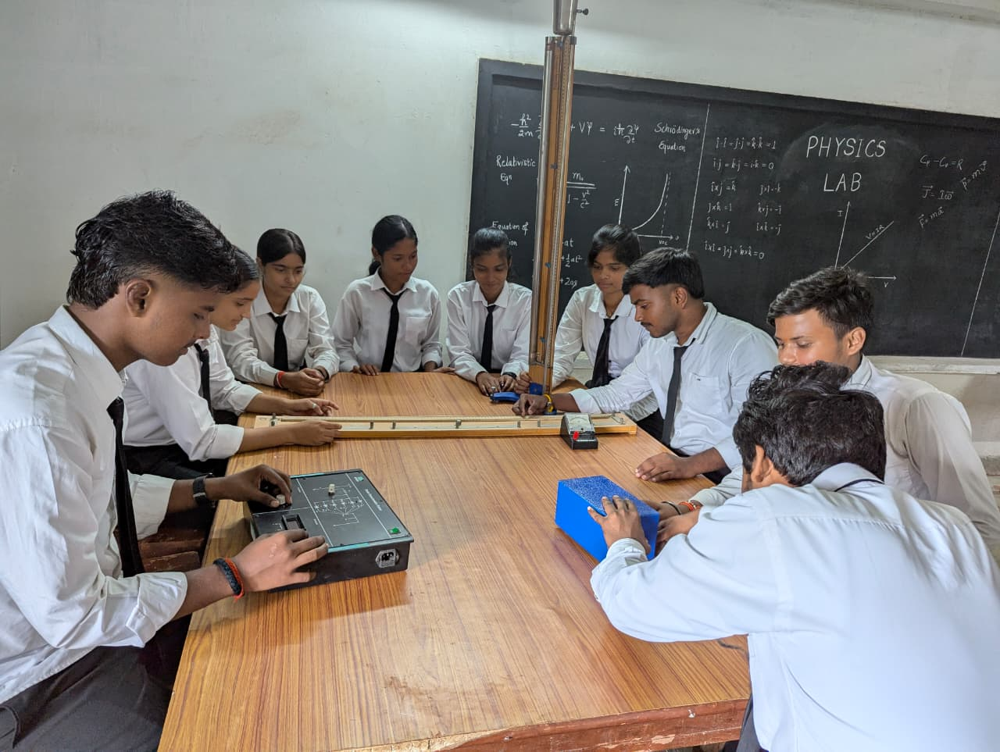
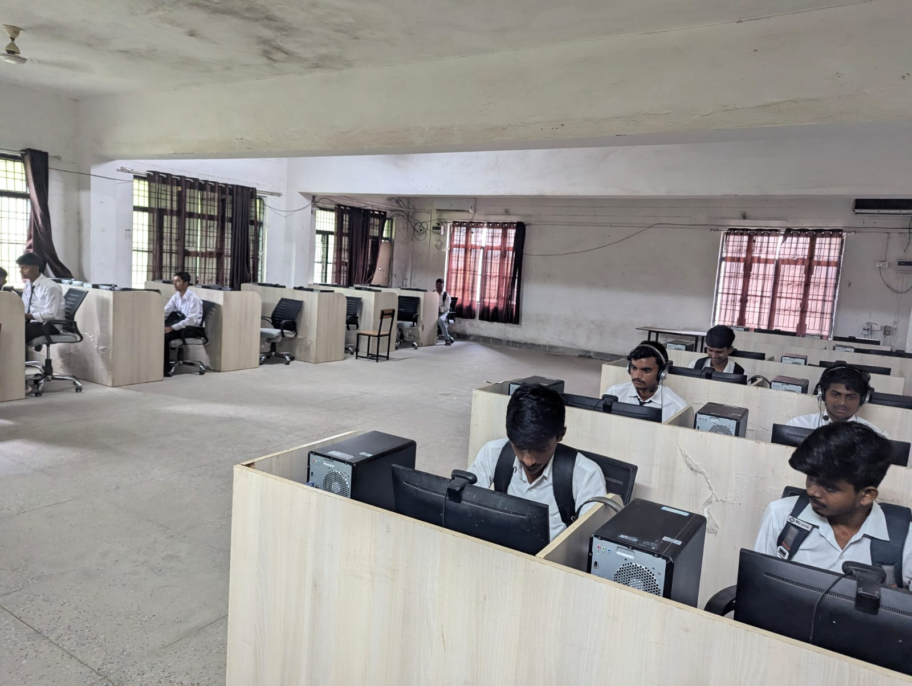

APPLIED SCIENCES & HUMANITIES
The Applied Science Department at Government Polytechnic Chopan plays a vital role in laying the academic foundation for all diploma programs. It integrates the principles of basic sciences and humanities to support technical education, ensuring that students develop the essential knowledge and skills needed for advanced engineering studies. The department focuses on key subjects such as: Engineering Physics – principles of mechanics, waves, optics, and modern physics applied to engineering problems. Engineering Chemistry – materials science, chemical processes, and environmental studies relevant to industry. Mathematics – algebra, calculus, differential equations, and statistics for solving engineering challenges. Communication Skills & Professional Practices – enhancing language proficiency, technical writing, and workplace readiness. With a strong emphasis on conceptual clarity, problem-solving, and practical applications, the Applied Science Department ensures that students are well-prepared for the technical courses in their respective engineering branches. Laboratory sessions, tutorials, and interactive teaching methods provide students with hands-on exposure and analytical skills, while soft-skill training nurtures confidence, teamwork, and professionalism. The department also encourages a spirit of inquiry, innovation, and lifelong learning, helping students build a solid academic base and holistic personality that supports their future careers in engineering and technology.
LABORATORIES

The Applied Chemistry Lab provides hands-on experience in chemical experiments such as titration, analysis, and study of materials. It helps students learn the properties and behavior of substances used in engineering, fostering a strong foundation for technical studies.
The Applied Physics Lab enables students to understand the principles of physics through experiments related to mechanics, optics, electricity, and properties of matter. It helps students connect theoretical concepts with practical applications in engineering.


The Communication Skills Lab helps students improve their English speaking, writing, and presentation abilities. Through practice sessions, group activities, and interactive learning, students develop confidence and essential soft skills for their academic and professional growth.
FACULTY

| Name | Mr. Vishal Sonkar |
|---|---|
| Designation | Lecturer |
| Qualifications | M.Sc |
| Department | Applied Sciences & Humanities |
| Area Of Specialization | Chemistry |
| Name | Mrs. Bulbul |
|---|---|
| Designation | Lecturer |
| Qualifications | M.Sc |
| Department | Applied Sciences & Humanities |
| Area Of Specialization | Mathematics |

| Name | Mr. Vaibhav Pandey |
|---|---|
| Designation | Lecturer |
| Qualifications | M.Sc |
| Department | Applied Sciences & Humanities |
| Area Of Specialization | Non-Linear Optics and Quantum Entanglement |

| Name | Mr. Arvind Kumar |
|---|---|
| Designation | Lecturer |
| Qualifications | M.A NET |
| Department | Applied Sciences & Humanities |
| Area Of Specialization | English And English Literature |